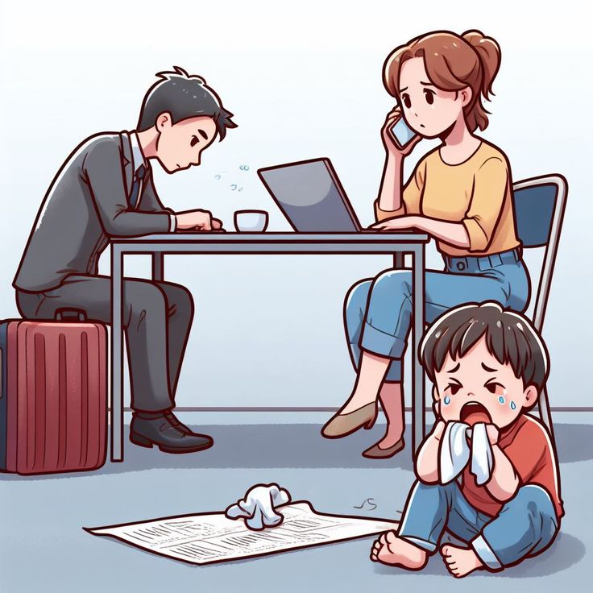
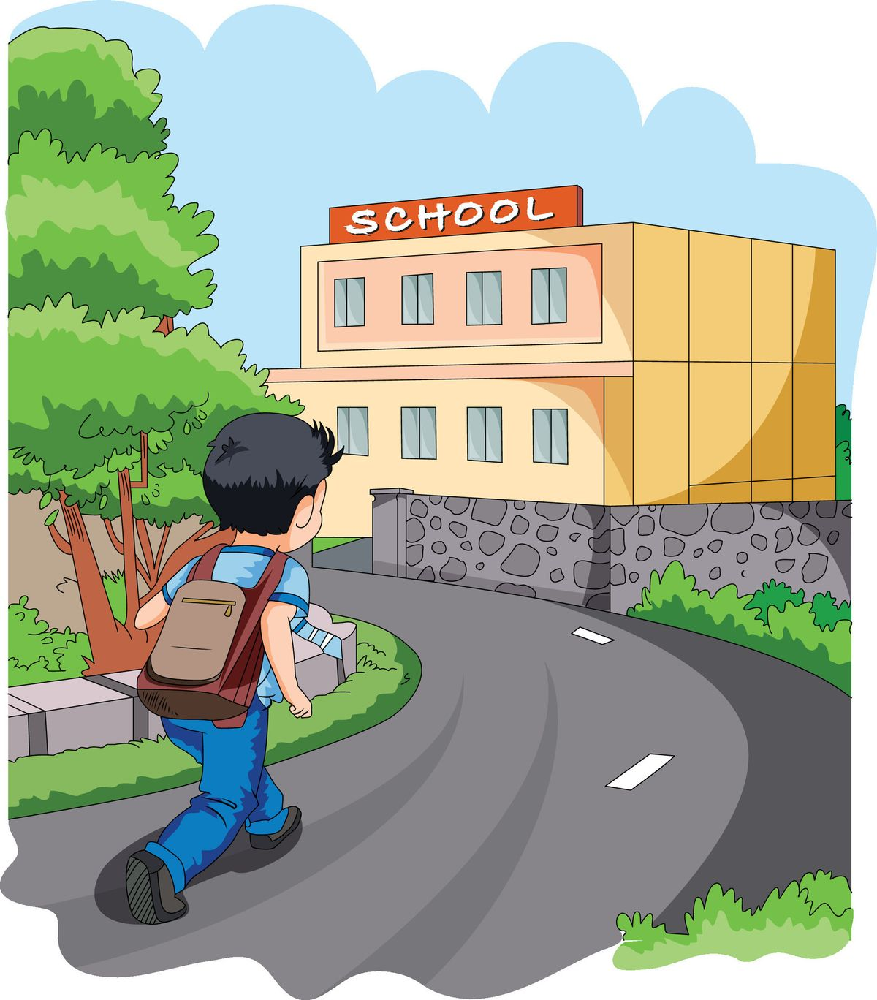

PLANTEL VALLE DE BRAVO
Anali Josefina Hernandez Jaramillo
Carlos Sanchez Osnaya
EL ABANDONO ESCOLAR SI TIENE SOLUCIÓN
¿Qué es?
El abandono escolar sucede cuando un estudiante deja la escuela antes de terminar sus estudios.

¿Por qué ocurre?
Problemas económicos, falta de motivación, problemas familiares y bajo rendimiento académico.

Consecuencias
Menores oportunidades laborales, ingresos bajos y menos desarrollo personal.

Prevención
Organización, apoyo de maestros, metas claras y técnicas de estudio.

Apoyos
Tutorías, apoyo psicológico y becas.